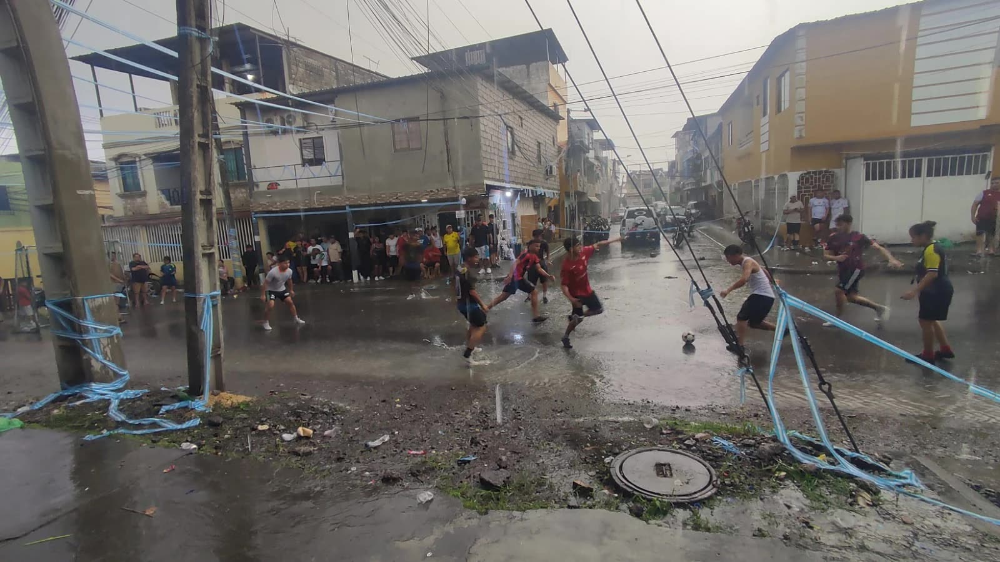
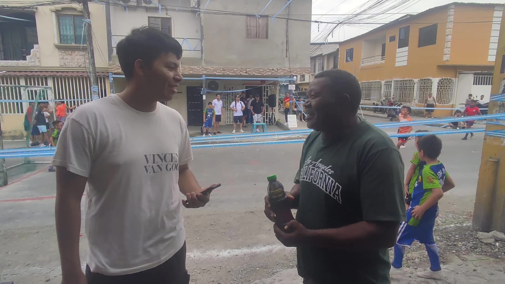
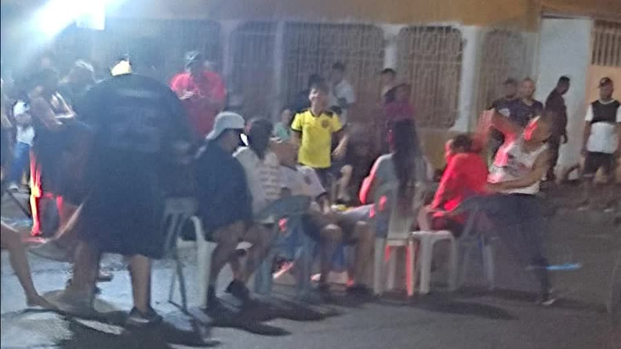
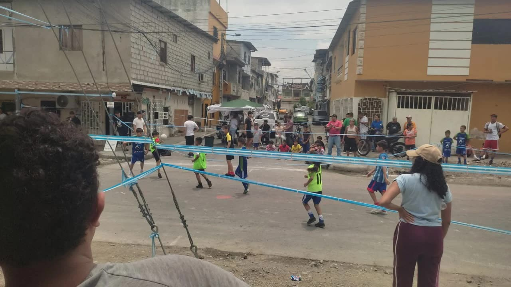

Ubicación del
Evento
El evento se realizó en el 8.º Callejón 18H N-O, en la calle principal del sector Gallegos Lara, al noroeste de Guayaquil.
Espacio público, calle principal de la Gallegos Lara.
Un reencuentro con la memoria recreativa y la unión intergeneracional en Guayaquil.
Durante las festividades octubrinas en la calle principal de la Gallegos Lara, realizamos un levantamiento de información para analizar la transformación de los espacios públicos y comparar la recreación tradicional con la actual. Este proyecto fomenta el diálogo intergeneracional y resalta la identidad barrial guayaquileña.


Adultos y Adultos Mayores: Expresan nostalgia por la tranquilidad de antaño y la hermandad en las veredas, manifestando inquietud ante la inseguridad y el uso excesivo de pantallas.
Niños y Jóvenes: Muestran inclinación hacia videojuegos (como Roblox) y el entretenimiento digital en casa, complementado con deportes organizados.

Tradición: Trompo con piola, bolichas/canicas, rayuela, ensacados, zancos de lata y cometas de papel llenaban las calles de interacción física.
Actualidad: Dispositivos móviles, tablets y videojuegos lideran el ocio actual, condicionado por la inseguridad ciudadana y la absorción tecnológica.

Los moradores proponen reapropiarse del espacio mediante festivales familiares y cierres de calles seguros para enseñar juegos típicos. Además, sugieren integrar juegos de mesa (dominó, cartas) para adultos mayores y torneos deportivos con incentivos para la juventud.
Registro visual de las entrevistas y dinámicas llevadas a cabo en la calle principal de la Gallegos Lara, documentando la interacción activa entre los estudiantes y los residentes de distintas generaciones.
El evento se realizó en el 8.º Callejón 18H N-O, en la calle principal del sector Gallegos Lara, al noroeste de Guayaquil.